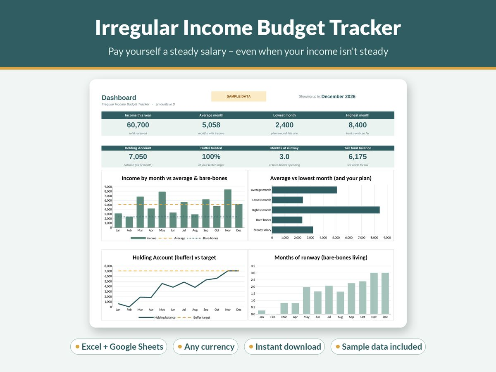

How to Budget on an Irregular Income (A Step-by-Step Method)

Most budgeting advice quietly assumes one thing: that the same amount of money lands in your account on the same day every month. If you freelance, drive for a delivery app, play gigs, sell on commission, run a small business or work seasonal contracts, that assumption falls apart in the first week.
The good news is that an irregular income doesn't make budgeting impossible. It just means the order of operations changes. Instead of budgeting from a pay cheque, you budget from a baseline, and you use a buffer to turn lumpy income into something that behaves like a salary.
This guide walks through that method step by step. You can do it with a notebook, a basic spreadsheet or a dedicated template. The method matters more than the tool.
Why normal budgets break when income varies
A standard monthly budget works like this: income comes in, you divide it into categories, you spend within those categories, repeat. When income is steady, every month looks roughly the same, so last month's budget is a decent guide to this month's.
With variable income, three things go wrong:
- You budget from a good month. After a strong month it's tempting to set your spending to match it. Then a quiet month arrives and the plan collapses.
- Tax sneaks up on you. If nobody withholds tax from your pay, money that feels like yours is partly owed to the tax office. Spending it creates a nasty bill later.
- Timing doesn't line up. Rent is due on the 1st, but the client pays on the 20th, or 60 days late. Even a year that's fine on paper can have weeks where you're short.
The method below solves each of these in turn.
Step 1: Work out your bare-bones number
Start with the minimum you need to get through a month without falling behind. This is not your ideal budget; it's the floor. Include:
- rent or mortgage
- utilities, phone and internet
- groceries (a realistic, plain version)
- transport to keep working
- insurance
- minimum debt repayments
- anything you're contractually locked into
Add it up. That total is your bare-bones budget. It's the number that has to be covered every single month, no matter what.
Knowing this number is calming. It tells you exactly what a "bad month" has to cover, and it gives your buffer a clear target later.
Step 2: Look back at your real income
Gather what you actually received over the last 6 to 12 months, from bank statements, invoices or your accounting app. Write down the monthly totals and look at three figures:
- the average month
- the lowest month
- the spread, meaning how far apart your best and worst months are
If you're new to self-employment and don't have a history yet, use a cautious estimate and plan to revisit it after three months.
The lowest month is the most useful number here. If your bare-bones budget is below your lowest month, you're in a strong position. If it's above it, you'll lean on the buffer more, so building it becomes the priority.
Step 3: Take tax off the top, every time
If you're self-employed, a share of every payment belongs to the tax office. How much depends entirely on where you live, how much you earn and what you can claim, so check your local tax authority's guidance or ask an accountant for the right percentage. Don't guess low.
The habit that matters: the moment a payment arrives, move the tax portion into a separate savings account and treat it as untouchable. Many people also set aside sales tax, VAT or GST the same way if they're registered for it.
Doing this per payment, rather than once a year, means you never have to find a large sum all at once, and the income you see in your main account is income you can actually use.
Step 4: Create a holding account
This is the heart of the method. Open a separate account (a simple savings account is fine) and call it your holding account. Every payment you receive goes into it first, after the tax portion has been moved out.
You don't spend from the holding account directly. Instead, once a month, you pay yourself a fixed amount from it into your everyday account. Good months fill the holding account up. Quiet months draw it down. Your everyday account sees the same deposit every month either way.
This separates two questions that usually get tangled up: "How much did I earn this month?" and "How much can I spend this month?"
Step 5: Choose a steady salary
Now pick the amount you'll pay yourself each month. A sensible starting point is somewhere between your bare-bones budget and your average month after tax:
- If your buffer is small, start close to the bare-bones figure.
- As the buffer grows, you can raise the salary towards your average.
- Avoid setting it above your average after-tax income. Over a year, that drains the holding account.
Review the salary every three to six months, not every month. The whole point is that it stays steady while your income moves around.
Step 6: Fill your budget from the top down
Your steady salary now funds a normal-looking monthly budget, with one important difference: categories are ranked by priority. List them in order:
- Essentials: the bare-bones items from Step 1.
- Goals: debt repayments above the minimum, savings, investing.
- Flexible spending: eating out, hobbies, subscriptions, treats.
The salary fills category 1 first, then 2, then 3. If you ever have to lower your salary for a while, the cut comes from the bottom of the list, not from rent. Writing the ranking down in advance means you make that decision once, calmly, rather than every time money is tight.
Step 7: Build the buffer and track your runway
Your buffer is simply the balance of the holding account. Give it a target expressed in months of bare-bones spending. Many people aim for three to six months, but the right figure depends on how unpredictable your work is and what other safety nets you have.
Track one number every month: months of runway, which is the holding account balance divided by your bare-bones budget. If it says 2.5, you could survive two and a half months with no income at all. Watching that number climb is far more motivating than staring at a bank balance, and it tells you immediately when you need to find more work or trim the salary.
Once the buffer reaches its target, you have choices. You can sweep the surplus into savings or debt repayment, or raise your salary.
Step 8: Use sinking funds for lumpy costs
Irregular earners often get caught by irregular expenses too: annual software subscriptions, equipment upgrades, car registration, insurance renewals, holidays, festival-season gift spending.
A sinking fund turns each one into a small monthly amount. Divide the expected cost by the number of months until it's due, and move that amount aside each month. Your tax set-aside from Step 3 is really just a sinking fund with a very important label. Our guide to sinking funds explained covers how to choose, size and track them.
A simple example
Imagine a freelance designer with a bare-bones budget of 2,400 a month (in whatever currency they use). Over the past year their income after tax ranged from about 1,500 in the quietest month to 5,000 in the busiest, averaging around 3,200.
- They choose a steady salary of 2,800: comfortably above bare-bones, below the average.
- In a 5,000 month, 2,200 stays in the holding account.
- In a 1,500 month, the holding account tops up the shortfall of 1,300.
- Their everyday account sees 2,800 every month regardless.
With a buffer target of four months (4 × 2,400 = 9,600), they can see exactly how far they've got and how many months of runway they have. These figures are illustrative only. Plug in your own.
Common mistakes to avoid
- Setting the salary from your best month. Use your average after tax, or lower.
- Skipping the tax step "just this once". That is how the tax bill turns into a crisis.
- Mixing business and personal money. Separate accounts make every step easier.
- Never reviewing. Revisit your salary, bare-bones figure and buffer target a few times a year, especially after a big change in work.
- Treating the buffer as a holiday fund. Its job is to cover lean months. Give holidays their own sinking fund.
Tools that make it easier
You can run this whole system with pen and paper, but a spreadsheet saves time because the arithmetic updates itself: the holding account balance, months of runway, how the salary fills each category and how close each sinking fund is to its goal.
If you'd like a ready-made version, our Irregular Income Budget Tracker is built around exactly this method. You log each payment, it sets tax aside, pays you a steady salary from a holding account, fills a priority-ordered budget and shows your buffer and runway on a dashboard. It works in Excel and Google Sheets, in any currency. If you also have debts to clear, the Debt Payoff Planner pairs well with it, and our guide to debt snowball vs avalanche explains how to choose a payoff order.
The short version
- Know your bare-bones number.
- Know your average and lowest month.
- Move tax aside the moment money arrives.
- Send all income to a holding account.
- Pay yourself the same salary every month.
- Fund essentials first, then goals, then extras.
- Grow the buffer and watch your months of runway.
- Use sinking funds for big, predictable bills.
Irregular income will always have good and bad months. With a buffer between you and the ups and downs, your day-to-day life doesn't have to swing with them.
This guide is general information, not financial or tax advice. Tax rules differ by country and situation; check with your local tax authority or a qualified adviser.
More guides
- A Simple Budget Template for Beginners (and How to Fill It In)
- Zero-Based Budgeting Step by Step: Give Every Dollar a Job
- Sinking Funds Explained: How to Stop Big Bills Wrecking Your Budget
- How to Budget on a Low Income: A Practical, Judgement-Free Guide
- Debt Snowball vs Avalanche: Which Is Better? (With a Worked Example)
- Small Business Bookkeeping for Beginners: A Simple System for Freelancers and Sole Traders
- Wedding Budget Breakdown by Category: A Practical Starting Split
- How Much Does a Baby Cost in the First Year? How to Estimate and Plan for It
- How Much to Spend on Christmas per Child (and How to Set a Christmas Budget)
- How to Set Up a 2027 Planner You'll Actually Use
- How to Write a Resume With No Experience (With Examples)